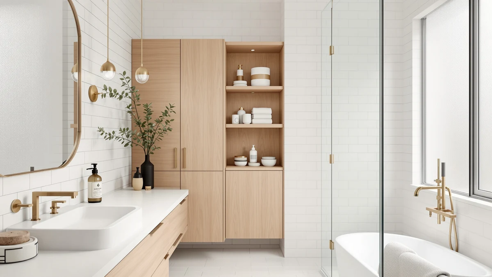

The Best Corner Bathroom Organizers (2026)
Prices and picks verified as of August 2026. Independent, reader-supported reviews.


Quick Answer
We compared seven corner and countertop organizers on tier count, material, and footprint to find the best corner bathroom organizers for a wasted 90-degree space. The Humskur Corner Bathroom Counter Organizer 2-Tier is our pick for most people: it fits a 9-inch corner, stacks two tiers, and costs $20.99. Spend more and the Dorhors 3-Tier gives you a third shelf without expanding the footprint.
Our pick: Corner Bathroom Counter Organizer 2-Tier, $20.99 Check Price on Amazon
Bottom line: our top pick is the Corner Bathroom Counter Organizer at $19.99. The best budget option is the Dorhors 2-Tier Bathroom Counter Organizer at $18.98.
Things to Know Before You Buy
- Corner fit varies by model. The best corner bathroom organizers range from a compact 9-inch Humskur up to a 22-inch-tall Susoct unit, so measure your corner before you order.
- Tier count changes what fits. Two-tier picks like the Dorhors 2-Tier suit a narrow counter, while 3-tier options such as the Fixwal and Susoct hold more bottles and jars without adding footprint.
- Every pick uses metal and wood. None of the seven organizers here rely on flimsy all-plastic construction, which matters once you load a shelf with full bottles.
- Prices span $17.98 to $39.99. The Dorhors 2-Tier is the cheapest way in, and the Susoct 3-Tier with a drawer and hooks sits at the top for shoppers who want more than open shelving.
- Not every organizer needs a true corner. Some picks, like the FURFUN, are narrow enough to slot beside a toilet or washing machine instead of sitting in a 90-degree angle.
The best corner bathroom organizers claim the dead 90-degree space that a flat tray or a straight shelf can't reach, so you gain storage without giving up the counter room you use every morning. We compared seven organizers ranging from $17.98 to $39.99, weighing tier count, material, and how well each one fits a corner rather than a countertop.
A bathroom counter fills up fast with skincare, perfume, and daily essentials, and a flat corner is usually the one spot left over. An organizer that fits there earns its keep, while one that's too wide becomes another thing crowding your sink. We looked at construction as closely as size, since a shelf that wobbles once loaded is worse than no shelf at all.
Our pick for most people is the Humskur Corner Bathroom Counter Organizer 2-Tier, which fits a 9-inch corner and costs $20.99. If you want a third shelf in roughly the same footprint, the Dorhors 3-Tier Corner Bathroom Organizer is the runner-up, and the Dorhors 2-Tier covers anyone who wants the lowest price in the lineup. Below, we explain how we chose, how we judged each one, and where every pick falls short.
Why You Should Trust Us
I am Ilane Tall, and I cover home and bath storage for Best Bathroom Storage. I have spent the past few years comparing corner bathroom organizers and countertop storage across price tiers, reading spec sheets, measuring real footprints, and tracking what buyers say once a unit has held up to daily use.
This guide skips the organizer with the longest feature list and looks instead for the one that fits a real corner, holds what you need, and stays steady under a full load of bottles. Every pick here is one I would recommend to a friend trying to reclaim a wasted bathroom corner, and I name the drawbacks next to the strengths so you can decide for yourself.
How We Picked
We started with a wide field of corner and countertop organizers, then narrowed to seven that balance price, tier count, and a footprint that fits an actual bathroom corner. We set a few rules before we compared any of them.
First, the organizer had to be sized for a corner or a narrow gap, not a full countertop. We favored compact footprints from 9 to 22 inches wide over units built for open counter space. Second, the frame had to combine metal and wood rather than lean on plastic alone, since that pairing holds up better once you load a shelf with bottles and jars. Third, the price had to make sense: our seven best corner bathroom organizers span $17.98 to $39.99, so shoppers at every budget have an option.
How We Compared
To judge each corner bathroom organizer, we worked through the same checklist for every model. We compared the listed dimensions against a typical 90-degree bathroom corner, noting which units would actually tuck into that angle versus which ones needed a flat countertop instead.
We also checked the specs table for material and size on every listing, since a shelf described as metal and wood needs to actually deliver that combination once assembled. We weighed tier count against footprint, because a 3-tier organizer that takes up no more space than a 2-tier one is the better deal, and we set that against price so a low sticker alone never decided a pick.
Our Picks

Corner Bathroom Counter Organizer 2-Tier
What we like
- Smallest footprint in our lineup at 9" x 2.5" x 9.8"
- Metal-and-wood build feels sturdier than the price suggests
- Two tiers fit a genuine 90-degree corner instead of a flat counter
- Priced under $21, among the cheapest of our seven picks
Flaws but not dealbreakers
- Two tiers hold less than the 3-tier options in this guide
- Its narrow depth suits skincare bottles more than bulky items
| Material | Metal / wood |
| Size | 9" x 2.5" x 9.8" |
The Humskur is our pick among the best corner bathroom organizers because it does the basic job well for a price almost anyone can justify. At 9 inches by 2.5 inches by 9.8 inches, it's the most compact organizer in this lineup, built to slot into a genuine 90-degree corner rather than spread across open counter space. The metal-and-wood frame gives it a backbone that all-plastic organizers lack, so the two tiers hold steady once you load them with bottles and jars.
At $20.99, it undercuts most of the other picks here while still using the same metal-and-wood construction you'd find on organizers twice the price. The trade-off is capacity. Two tiers in a 9-inch footprint hold less than a 3-tier organizer, so if your corner needs to store more than skincare and perfume bottles, the Dorhors 3-Tier below gives you a third shelf in a similar space.

Dorhors 3-Tier Corner Bathroom Organizer
What we like
- Three tiers instead of two, without moving to a full countertop unit
- Metal-and-wood build matches the sturdier picks in this guide
- Sized specifically for a corner rather than a straight counter run
- Only $2.99 more than our top pick for one extra tier
Flaws but not dealbreakers
- The extra tier adds height, so check clearance under a mirror or cabinet
- Open shelving means items are visible rather than tucked away
| Material | Metal / wood |
| Size | Corner |
The Dorhors 3-Tier is our runner-up because it adds a full extra shelf to the same corner-fit concept as our top pick, for less than three dollars more. Like the Humskur, it pairs a metal frame with a wood shelf, so the extra tier doesn't come at the cost of stability once you load it with bottles and jars. Its listed size is simply "corner," which matches its purpose: this is a unit built to sit in the 90-degree angle a straight shelf can't use.
Three open tiers give you more room to spread out skincare, grooming tools, or a hair dryer than the two-tier Humskur allows, which makes this the pick if one shelf per tier isn't enough. The open design keeps everything visible and within reach, though that also means the shelves show clutter if you don't keep them tidy. At $23.98, it's still one of the more affordable corner bathroom organizers in this guide.

Dorhors 2-Tier Bathroom Counter Organizer
What we like
- Cheapest of the seven organizers we compared at $17.98
- Compact 7.67 x 7.67 x 13.58-inch size fits most corners
- Metal-and-wood construction despite the low price
- Two tiers cover the basics without excess bulk
Flaws but not dealbreakers
- Taller than it is wide, so it needs vertical clearance
- Two tiers won't suit a bathroom that needs heavy-duty storage
| Material | Metal / wood |
| Size | 7.67 x 7.67 x 13.58 inches |
The Dorhors 2-Tier earns its spot as our budget-friendly also-great pick simply by costing less than every other corner bathroom organizer we compared. At $17.98, it's more than five dollars cheaper than the next lowest-priced option, and it still uses the same metal-and-wood build as the pricier picks in this guide rather than cutting corners on materials.
Its 7.67 by 7.67 by 13.58-inch size gives it a taller, narrower profile than the Humskur, so it favors a corner with some vertical room over a low, wide one. Two tiers keep it simple: this is the organizer for a bathroom that needs the basics covered without paying for a third shelf you might not fill. If your corner can take the height, it's the easiest way into this category for less than $20.

Fixwal Bathroom Counter Organizer 3
What we like
- Low, elongated shape at roughly 44.8 cm long by 5.9 cm tall
- Metal-and-wood build stays consistent with our other picks
- Priced within a dollar of the Dorhors 3-Tier at $23.99
- Its shallow height keeps it out of the way of a mirror or medicine cabinet
Flaws but not dealbreakers
- Its long, low shape suits a counter run more than a tight corner angle
- Limited height per tier means it favors smaller bottles
| Material | Metal / wood |
| Size | 21.7932 cm x 5.8928 cm x 44.7802 cm |
The Fixwal earns its spot as our budget pick by covering a different shape of counter than the other six organizers here. At roughly 44.8 cm long and only 5.9 cm tall, it's built low and long rather than compact and boxy, which makes it a better fit for a narrow counter run than a deep 90-degree corner. It still uses the same metal-and-wood combination as every other pick in this guide, so it doesn't sacrifice sturdiness for its shape.
At $23.99, it lands in the middle of our price range, a dollar above the Dorhors 3-Tier and six dollars above the cheapest Dorhors 2-Tier. Its low profile is the main trade-off: shorter tiers mean less room for tall bottles, so it works best for smaller items like skincare tubes and travel-size toiletries rather than full-size shampoo bottles.

SANRETAHO 2-Tier Wood Bathroom Counter
What we like
- Metal-and-wood build matches the sturdier picks in this guide
- Priced at $23.38, close to the middle of our range
- Straightforward two-tier layout with no extra parts to assemble
- Wood finish suits a bathroom that leans more traditional than modern
Flaws but not dealbreakers
- Two tiers offer less capacity than the 3-tier picks in this guide
- Doesn't stand out on price against the similarly sized Dorhors 2-Tier
| Material | Metal / wood |
| Size | 2 Tier |
The SANRETAHO is a solid also-great pick if you want the same metal-and-wood formula as our top picks without hunting for the absolute lowest price. At $23.38, it sits close to the middle of the seven organizers we compared, and its two-tier layout keeps the design simple: no drawer, no hooks, a straightforward wood shelf built to hold what a bathroom corner usually needs.
Its main weakness is differentiation. The two-tier capacity matches the cheaper Dorhors 2-Tier almost exactly, and at nearly six dollars more, it doesn't offer a clear reason to choose it over that option unless you prefer its particular wood finish. It's a fine corner bathroom organizer on its own, but it isn't the value leader in this guide.

FURFUN Bathroom Storage and Organizer
What we like
- Stands 32.68 inches tall, adding vertical storage a countertop unit can't
- Only 9.85 inches wide, so it fits a slim gap most organizers can't use
- Metal-and-wood build consistent with the rest of our picks
- Freestanding design needs no counter space at all
Flaws but not dealbreakers
- At $35.99, it's the second-most expensive organizer in this guide
- Its floor-standing height makes it a poor fit for a true corner counter
| Material | Metal / wood |
| Size | 9.85 x 11.42 x 32.68 inches |
The FURFUN takes a different approach than the other six organizers here. Instead of sitting on a countertop corner, it stands 32.68 inches tall on its own 9.85-inch-wide footprint, so it belongs on the floor beside a toilet or washing machine rather than in a 90-degree counter angle. That height gives it more total storage than any countertop pick in this guide, spread across a footprint narrow enough for a gap other organizers can't use.
At $35.99, it costs more than every other pick except the Susoct 3-Tier below, and that price buys floor-standing height rather than a small corner unit. If your bathroom's dead space is a narrow floor gap instead of a counter corner, this is the organizer built for it. If you specifically need countertop storage, one of the shorter picks above will serve you better.

3-Tier Bathroom Counter Organizer with
What we like
- Largest overall footprint in this guide at 13" x 6.8" x 22"
- Three tiers plus a drawer basket add more storage than any other pick
- Metal-and-wood build stays consistent with the rest of our lineup
- Extra size suits a bathroom with more corner space to fill
Flaws but not dealbreakers
- At $39.99, it's the most expensive organizer we compared
- Its larger footprint won't fit the tightest corners the way the Humskur does
| Material | Metal / wood |
| Size | 13" x 6.8" x 22" |
This Susoct organizer is the largest of the seven corner bathroom organizers we compared, measuring 13 by 6.8 by 22 inches, and it carries the highest price in the guide at $39.99. That extra size and cost buy you three tiers, more than double the footprint of the compact Humskur, giving you room for everything from daily toiletries to bulkier items the smaller picks can't hold.
It uses the same metal-and-wood construction as every other organizer here, so the added size doesn't come at the cost of the sturdiness we look for. The trade-off is straightforward: at nearly double the price of our top pick, it only makes sense if your bathroom has the corner space to fill and you need the extra capacity. For a tighter corner, one of the smaller picks above will fit better and cost less.
Quick Comparison
| Product | Material | Price | Rating | Best for | Get it |
|---|---|---|---|---|---|
| Corner Bathroom Counter Organizer 2-Tier | Metal / wood | $20.99 | 4 | Small corners on a budget | View on Amazon → |
| Dorhors 3-Tier Corner Bathroom Organizer | Metal / wood | $23.98 | 4 | A third shelf in the same corner | View on Amazon → |
| Dorhors 2-Tier Bathroom Counter Organizer | Metal / wood | $17.98 | 4 | The lowest price of the seven | View on Amazon → |
| Fixwal Bathroom Counter Organizer 3 | Metal / wood | $23.99 | 4 | Long, narrow counter runs | View on Amazon → |
| SANRETAHO 2-Tier Wood Bathroom Counter | Metal / wood | $23.38 | 4 | A simple mid-priced wood shelf | View on Amazon → |
| FURFUN Bathroom Storage and Organizer | Metal / wood | $35.99 | 4 | Narrow floor gaps beside a toilet | View on Amazon → |
| 3-Tier Bathroom Counter Organizer with | Metal / wood | $39.99 | 4 | Maximum storage in a larger corner | View on Amazon → |
What is the best corner bathroom organizer for a small vanity?
The Humskur Corner Bathroom Counter Organizer 2-Tier is our top pick at $20.99.
Are corner bathroom organizers sturdy enough for everyday use?
Every organizer in this guide pairs a metal frame with a wood shelf, a combination that holds up better than plastic under the weight of bottles and jars.
The Competition
We looked at more than the seven organizers that made this guide, and a few common types of corner bathroom organizers fell short for reasons worth naming.
All-plastic corner shelves. The cheapest corner organizers skip the metal-and-wood frame every pick here uses, and they flex once you load them with full bottles. They look fine in photos and feel hollow once installed, so we left them out.
Suction-mount corner caddies. Several stick-on options promised no-drill corner storage, but suction mounts lose their grip over time in a steamy bathroom, and a shelf that falls is worse than no shelf. None of our picks rely on suction.
Oversized multi-shelf towers. A handful of tall corner units offered more storage than the FURFUN or the Susoct, but their footprint was too wide for a true corner and better suited to a walk-in closet than a bathroom.
The bottom line: among the best corner bathroom organizers we compared, the Humskur Corner Bathroom Counter Organizer 2-Tier is the one we'd buy first, fitting a genuine 90-degree corner for $20.99. Step up to the Dorhors 3-Tier for an extra shelf, or the Susoct if your corner has room to spare.